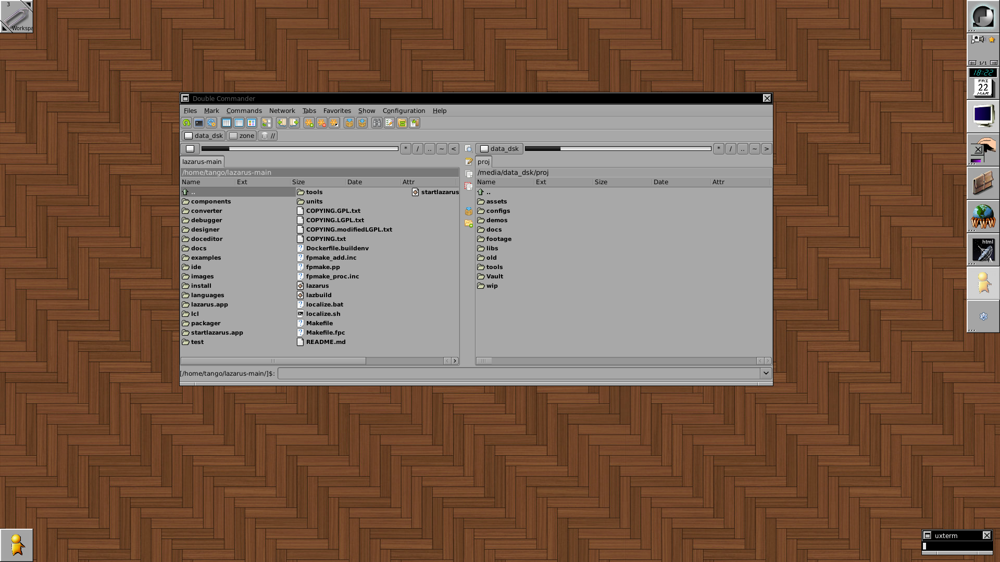

Window Maker
My favorite things on Linux are
GNOME2
and
Window Maker,
the former of which was not kept around properly, and to use that these days, you have to maintain all of its former glory yourself.
MATE
tried to stick to its guns during the early days by holding onto the original GUI; however, it was not hard-headed enough to continue doing so, hehehe.
All of this is rather okay, because i like Window Maker way more due to its consistently good design.
Its principles are to keep everything the same in how it looks and behaves, both of which are important human elements for extensive computer usage and for retaining users and staying relevant to the original sensibilities.
These kinds of considerations, i present here, can save you time in the long run and give you a sense of conceptual ownership of your computing ways, even when you go through some slight trials and tribulations.
While i, myself, will never spend more than a few minutes here and there configuring the look of a workspace; i still hold onto some UI principles that i really look for in my everyday Linux experience
that can make it feel and behave in a way that clicks with all of my being.
Here, below, i share some screenshots and documents that could be helpful and show one way of using Linux. At the very least i have a roof to package everything under.
Double Commander

Interface Layout:
- Right panel is dragged to the left, when i don't want a dualpaned view.
- [x] Brief View
Settings:
- These settings are the ones i specifically enable or disable, but not everything available.
- Preferences:
- Colors/File Panels:
- [] Use Gradient Indicator
- File Operations:
- [x] Select file name without extension when renaming
- Files views extra
- [] Show square brackets around directories
- Colors/File Panels:
- Fonts:
- Main Font: default 8
- Editor Font: Monospace 9
- Viewer Font: Monospace 9
- ViewerBook Font: 16
- Log Font: Monospace 10
- Console Font: Monospace 10
- Icons:
- File Panel: 16x16
- Disk Panel: 16x16
- Layout:
- [x] Show main menu
- [x] Show toolbar
- [x] Show middle toolbar
- [x] Show drive buttons
- [] Show two drive button bars
- [] Flat buttons
- [x] Show drives list button
- [] Show free space label
- [] Show short free space label
- [x] Show free space indicator on drive label
- [x] Show folder tabs
- [x] Show current directory
- [x] Show tabstop header
- [] Show status bar
- [x] Show command line
- [] Show function key buttons
- [] Flat interface
- [] Show log window
- [] Show terminal window
- [] Show common progress in menu bar
- [x] Show panel of operation in background
- Miscellaneous:
- [x] Always go to the root of a drive when changing drives
- Mouse/Drag & Drop:
- [] Show confirmation dialog after drop
- Toolbar:
- [] Flat buttons